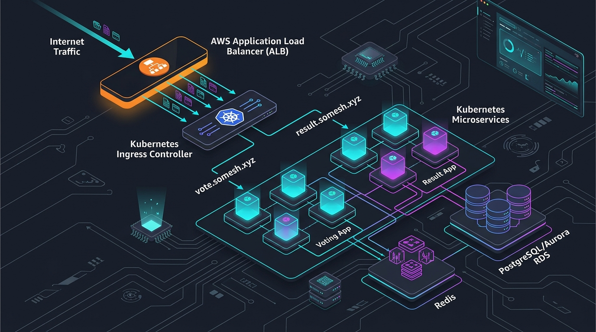

SLIDE 01 / 14
Architecture Overview
Kubernetes Ingress Architecture
Exposing Multiple Microservices Through AWS Application Load Balancer
- Centralized Edge Ingestion: Unifying external traffic for distributed microservices through a single managed AWS Application Load Balancer (ALB).
- Host-Based Layer 7 Switching: Dynamic routing for
vote.somesh.xyzandresult.somesh.xyzat the cloud boundary. - Direct Pod IP Ingress: Native AWS VPC CNI routing via
target-type: ip, bypassing NodePort and kube-proxy DNAT latency. - Zero-Trust Internal Network: Application workloads, cache, and state stores isolated entirely on private Kubernetes
ClusterIPnetworks.
# Configured Hosts (miniproject-ingress.yaml)
vote.somesh.xyz --> voting-service:80 --> voting-app Pods (x2)
result.somesh.xyz --> result-service:80 --> result-app Pod (x1)
"Good morning, everyone. Today I'm presenting a production-style Kubernetes Ingress architecture based on a real-world microservice deployment on AWS. When designing containerized systems, one of the most critical platform decisions is how external user traffic enters the cluster safely and reaches target pods. In this project, I engineered a centralized ingress pattern using the AWS Load Balancer Controller and Kubernetes Ingress, exposing multiple microservices—our voting frontend and real-time results portal—through a single managed Application Load Balancer using host-based routing. Over the next 15 minutes, I'll walk you through the end-to-end traffic flow, why this architecture avoids anti-patterns like multiple public load balancers, the AWS-specific annotations configured in the manifests, and how requests journey from DNS down to pod network namespaces and state stores."
SLIDE 02 / 14
System Decomposition
Example Voting Application
Microservice Decomposition & Asynchronous Architecture
- Voting App (Python / Flask): Ingests user votes (Cats vs Dogs). Stateless frontend with 2 replicas behind
voting-service:80. - Redis Queue (In-Memory Buffer): Absorbs write bursts. Decouples fast frontend ingestion from database disk I/O.
- Worker App (.NET Core Daemon): Background consumer pulling votes from Redis and committing them to PostgreSQL.
- PostgreSQL 9.4 (Relational State): Persists vote tables and totals behind internal service
db:5432. - Result App (Node.js / Angular): Real-time visualization dashboard querying PostgreSQL.
flowchart TD
V[Voting App Frontend] -->|LPUSH| R[Redis In-Memory Queue]
R -->|BRPOP| W[Worker Daemon .NET]
W -->|INSERT / UPDATE| DB[(PostgreSQL 9.4)]
DB -->|SELECT Live Tallies| Res[Result App Dashboard]
"To understand our networking requirements, let's look at the application topology. This is a classic distributed microservice architecture featuring an asynchronous processing pipeline. Notice the separation of concerns: our Python voting frontend does not touch the database directly; it offloads votes to Redis in memory. A background .NET worker consumes events from Redis and writes them to PostgreSQL. Finally, the Node.js result app queries Postgres to display real-time analytics. From an infrastructure perspective, notice that out of five components, only TWO require public ingress: the Voting App and the Result App. The Worker, Redis, and PostgreSQL must remain strictly private. This is where Kubernetes Ingress shines."
SLIDE 03 / 14
Cloud Economics & Ingress Patterns
The Problem: Exposing Multiple Applications
Multiple LoadBalancers vs. Centralized Kubernetes Ingress
| Architecture Dimension | Anti-Pattern: Multiple LoadBalancer Services | DevOps Best Practice: Kubernetes Ingress + AWS ALB |
|---|---|---|
| Cloud Resource Footprint | 1 AWS ELB/NLB provisioned per application service | Single AWS ALB serves entire cluster ingress |
| Cost Model | Base hourly cost multiplied by $N$ services + data fees | Consolidated base cost; pay only for combined LCUs |
| TLS / SSL Certificates | Fragmented ACM certs across multiple ELBs | Centralized ACM wildcard cert on one listener |
| Routing Capabilities | Layer 4 (IP / Port) only; blind to HTTP headers | Layer 7 aware: Host headers, paths, HTTP methods |
flowchart LR
subgraph AntiPattern[" Multiple LoadBalancers (Costly & Fragmented) "]
C1[Clients] --> LB1[AWS ALB #1] --> S1[Voting App]
C1 --> LB2[AWS ALB #2] --> S2[Result App]
end
subgraph BestPractice[" Centralized Ingress (Single Entry Point) "]
C2[Clients] --> ALB[Single AWS ALB]
ALB -->|vote.*| S3[Voting App]
ALB -->|result.*| S4[Result App]
end
"When junior engineers deploy multiple web services on Kubernetes, their immediate instinct is often to change every Service type to LoadBalancer. From a DevOps and cloud economics perspective, that is an anti-pattern. If you have 10 microservices, creating 10 LoadBalancer services provisions 10 distinct AWS ELBs or NLBs. That means 10 times the base AWS hourly cost, fragmented DNS records, multiple public endpoints to secure, and zero Layer-7 routing intelligence. Instead, our architecture uses Kubernetes Ingress. A single AWS Application Load Balancer acts as our cluster front door. We route traffic based on HTTP Host headers—sending vote.somesh.xyz to our voting pods and result.somesh.xyz to our result pods—while maintaining internal services as private ClusterIP resources."
SLIDE 04 / 14
Kubernetes Primitives
What Is Kubernetes Ingress?
Decoupling Declarative Routing Rules from Cloud Infrastructure
- Ingress Resource: A declarative manifest (
networking.k8s.io/v1) specifying routing rules (hosts, paths, and backend services). It does not route traffic by itself! - Ingress Controller: An active in-cluster controller (AWS Load Balancer Controller) watching the API server and provisioning real AWS ALB resources.
- Kubernetes Service: Stable Layer-4 virtual IP and discovery abstraction selecting pods via labels.
- Workload Pod: Ephemeral application container running inside its own network namespace.
flowchart TD
A[Developer writes Ingress YAML] -->|kubectl apply| B[kube-apiserver etcd]
B -.->|Watch Event| C[AWS Load Balancer Controller]
C -->|AWS ELBv2 API| D[AWS Application Load Balancer]
D -->|Direct Forward| E[Container Pods]
"It's crucial to understand the distinction between an Ingress and an Ingress Controller—this is a classic interview question. An Ingress resource is just an API manifest, a set of instructions stored in etcd. On its own, it does absolutely nothing. You need an Ingress Controller running in your cluster. Here, we use the AWS Load Balancer Controller. The controller listens to the Kubernetes API server, detects our voting-ingress manifest, calls the AWS ELBv2 APIs, provisions an internet-facing Application Load Balancer, creates listener rules, and synchronizes target groups with our pod IPs. The Ingress defines the rules; the controller provisions and programs the infrastructure."
SLIDE 05 / 14
System Topology
Our Kubernetes Ingress Architecture
External Ingress Perimeter & Internal Cluster Mesh
flowchart TB
subgraph Edge[" 1. Public AWS Edge "]
Internet(( Internet )) --> ALB[AWS Application Load Balancer]
end
subgraph IngressRules[" 2. Layer-7 Host Rules "]
ALB -->|Host: vote.somesh.xyz| TG1[Target Group: Voting]
ALB -->|Host: result.somesh.xyz| TG2[Target Group: Result]
end
subgraph Cluster[" 3. Private EKS Cluster "]
TG1 ===>|target-type: ip| P1[Voting Pod 1: 10.0.1.15]
TG1 ===>|target-type: ip| P2[Voting Pod 2: 10.0.2.42]
TG2 ===>|target-type: ip| P3[Result Pod: 10.0.2.88]
P1 --> SvcRedis[Service: redis :6379]
P2 --> SvcRedis
SvcRedis --> RedisPod[(Redis Pod)]
Worker[Worker Pod] --> SvcRedis
Worker --> SvcDB[Service: db :5432]
SvcDB --> PG[(PostgreSQL Pod)]
P3 --> SvcDB
end
"Slide 5 illustrates our complete architecture diagram. Notice the clean segregation between external ingress and internal communications. External users access the cluster exclusively via two hostnames hitting the ALB. Once traffic passes the ALB, notice how internal communications operate: the Voting App connects to redis:6379. It doesn't need hardcoded IP addresses because Kubernetes CoreDNS resolves the Service name redis to its ClusterIP. The Worker pod continuously pulls jobs from Redis and writes records to db:5432. Finally, the Result App queries db to read those counts. PostgreSQL and Redis have zero exposure to the internet, satisfying core defense-in-depth principles."
SLIDE 06 / 14
Packet Journey
What Happens When a User Opens vote.somesh.xyz?
Step-by-Step Traversal from Client Browser to Container Namespace
- 1. DNS Resolution: Client queries Route 53 for
vote.somesh.xyz; resolves to ALB Anycast IPs. - 2. Edge Ingestion: Inbound HTTP connection accepted on ALB Port 80.
- 3. Host Header Evaluation: ALB inspects HTTP Layer-7 headers, matching
Host: vote.somesh.xyzand path/. - 4. Target Group Selection: Request assigned to voting target group operating in
ipmode. - 5. Direct Pod Dispatch: Request forwarded directly to Pod IP
10.0.1.15:80(zero NodePort hops). - 6. Application Response: Flask renders HTML response, returned through ALB back to browser.
sequenceDiagram
actor Client
participant ALB as AWS ALB
participant Pod as Voting Pod (10.0.1.15)
participant Redis as Redis (:6379)
Client->>ALB: HTTP GET vote.somesh.xyz
ALB->>Pod: Forward to Pod IP
Pod-->>ALB: HTTP 200 OK
ALB-->>Client: Render UI
Client->>ALB: HTTP POST (Vote: "Cats")
ALB->>Pod: Forward POST
Pod->>Redis: LPUSH votes
Pod-->>ALB: HTTP 200 (Vote Recorded)
ALB-->>Client: Acknowledge
"Let's trace a packet step-by-step when a user casts a vote. First, the browser resolves vote.somesh.xyz through DNS, which points to the ALB. Second, the ALB terminates the client connection and inspects the HTTP headers. It sees the Host: vote.somesh.xyz header. Third, the ALB matches this against the listener rules generated by our Ingress manifest. Fourth, because our manifest specifies target-type: ip, the ALB does NOT forward to a cluster node's random NodePort. It forwards the request directly to the private VPC IP of one of our voting app pods! Finally, the voting app processes the POST, enqueues the vote onto Redis, and returns the confirmation response. The client experiences minimal latency because the ALB talks directly to the pod."
SLIDE 07 / 14
Layer-7 Switching
Host-Based Routing with Kubernetes Ingress
Multi-Tenancy at the Edge via HTTP Host Headers
- Shared Infrastructure: A single entry point handles distinct microservices with independent domain identities.
- Header-Driven Multiplexing: The ALB inspects the HTTP/1.1 or HTTP/2
Hostheader to make routing decisions. - Default Security Action: Any request lacking a valid recognized Host header is rejected immediately at the edge (HTTP 404 / 403), protecting pods from unauthorized scanners.
- Independent Service Lifecycles: Teams can deploy, upgrade, and autoscale the voting app without impacting the result analytics app.
flowchart LR
Req[Incoming HTTP Request] --> Check{Host Header?}
Check -->|vote.somesh.xyz| TG1[voting-service Target Group]
Check -->|result.somesh.xyz| TG2[result-service Target Group]
Check -->|Other / Unknown| Drop[404 Not Found Edge Drop]
"Host-based routing is the mechanism that unlocks maximum efficiency in cloud networking. Instead of provisioning separate IP addresses or load balancers for every microservice, the ALB inspects the HTTP Host header in the request. If the header is vote.somesh.xyz, the ALB directs the request to the voting target group. If the header is result.somesh.xyz, it routes to the result dashboard target group. If someone scans the load balancer IP directly or passes an unauthorized domain, the ALB drops the connection. This delivers clean domain branding, high resource efficiency, and centralized traffic management."
SLIDE 08 / 14
AWS Load Balancer Controller
AWS ALB + Kubernetes Ingress
Deconstructing the YAML Manifest Annotations
# Source: miniproject-ingress.yaml
metadata:
name: voting-ingress
annotations:
alb.ingress.kubernetes.io/scheme: internet-facing
alb.ingress.kubernetes.io/target-type: ip
alb.ingress.kubernetes.io/listening-port: '[{"HTTP": 80}]'
spec:
ingressClassName: alb| Annotation / Field | Configured Value | Technical Meaning & DevOps Impact |
|---|---|---|
ingressClassName |
alb |
Associates the Ingress with the AWS Load Balancer Controller for reconciliation. |
scheme |
internet-facing |
Deploys ALB into public subnets with public IPs and DNS for public internet access. |
target-type |
ip |
Direct Pod Routing: ALB routes to pod IPs via AWS VPC CNI. Eliminates NodePort & kube-proxy overhead. |
listening-port |
[{"HTTP": 80}] |
Configures HTTP listener on port 80 (Note: Controller canonical key is listen-ports). |
"Slide 8 highlights the exact annotations in our Ingress YAML. First, ingressClassName: alb associates this manifest with the AWS Load Balancer Controller. Second, scheme: internet-facing ensures the ALB gets deployed in public subnets with public DNS names so internet users can vote. Third, and most importantly, target-type: ip. In traditional Kubernetes setups, load balancers route to worker nodes on high-range NodePorts, and kube-proxy routes the packet across nodes using iptables. That introduces extra network hops and hides client IPs. With target-type: ip and AWS VPC CNI, the ALB registers the actual Pod private IPs directly in the ALB Target Group. The load balancer talks directly to the container, cutting latency and eliminating kube-proxy bottlenecks."
SLIDE 09 / 14
Kubernetes Networking Model
Ingress vs Service vs Pod
Why Ingress Does Not Replace Kubernetes Services
- Pod: Ephemeral container executing code. IP addresses are non-deterministic and change on restart.
- Service: Durable internal abstraction providing permanent virtual IP, DNS identity, and endpoints tracking.
- Ingress: Layer-7 policy engine bridging external traffic to internal Services.
- Why 2 Replicas for Voting App: Delivers instant high availability. If Pod 1 restarts, the Service and Target Group route all traffic to Pod 2 with zero downtime.
flowchart TD
Ingress[Ingress / AWS ALB] -->|Routing Policy| Svc[Service: voting-service]
Svc -.->|Selector| Pod1[Voting Pod 1 - 10.0.1.15]
Svc -.->|Selector| Pod2[Voting Pod 2 - 10.0.2.42]
"A frequent interview trap is confusing Ingresses with Services. An Ingress does not replace a Service—they work together. Pods are ephemeral; when a pod restarts, it gets a brand-new IP address. A Kubernetes Service provides a stable, permanent IP and DNS identity for those pods using label selectors. Even with target-type: ip where the ALB routes to pod IPs, the Ingress still references the Service in its YAML. The AWS Load Balancer Controller watches the Kubernetes Endpoints or EndpointSlices managed by the Service to continuously discover and register healthy pod IPs into the AWS Target Group. And notice that our Voting App deployment runs 2 replicas: if Pod 1 terminates, the Service and Target Group immediately reroute all traffic to Pod 2 without user interruption."
SLIDE 10 / 14
Data Architecture
Inside the Cluster: Vote Processing Pipeline
Asynchronous Ingestion, Buffering, and Relational State
flowchart LR
Vote[1. User Casts Vote] --> Flask[Voting App Flask]
Flask -->|2. LPUSH 'votes'| Redis[(Redis In-Memory Queue)]
Worker[.NET Worker Daemon] -->|3. BRPOP 'votes'| Redis
Worker -->|4. SQL INSERT / UPDATE| PG[(PostgreSQL 9.4)]
PG -->|5. SQL SELECT| Res[Result App Node.js]
Res --> Viewer[6. User Views Live Result]
- Frontend Protection: Python frontend pushes JSON payload into Redis in sub-milliseconds without blocking on disk.
- Spike Absorption: Redis buffers millions of votes, acting as a shock absorber during traffic spikes.
- Controlled Persistence: Worker process drains Redis at a safe rate, preventing database connection exhaustion.
"Slide 10 details what happens inside the cluster after a vote is received. We deliberately decoupled the voting frontend from the database using Redis and a background worker. Imagine an election or television event where 100,000 votes hit per second. If the voting frontend tried to write directly to PostgreSQL, connection pools would saturate and the database would crash. By using Redis as an in-memory queue, the frontend pushes the vote in microseconds and returns a 200 OK. Our worker pod pops votes from Redis at a controlled rate and writes them to PostgreSQL. Then our Result App simply queries PostgreSQL to display the live score. This architecture isolates write spikes and guarantees resilience."
SLIDE 11 / 14
Master Architecture
Complete End-to-End Traffic & Data Flow
Edge Ingress + Workload Distribution + Stateful Processing
flowchart TB
subgraph PublicZone[" External Edge "]
U1[Voter: vote.somesh.xyz]
U2[Viewer: result.somesh.xyz]
ALB[AWS Application Load Balancer]
U1 --> ALB
U2 --> ALB
end
subgraph IngressTier[" Ingress Layer 7 Routing "]
ALB -->|Host: vote.somesh.xyz| V_Pods[Voting Pods x2]
ALB -->|Host: result.somesh.xyz| R_Pod[Result Pod x1]
end
subgraph InternalMesh[" Private Cluster Network "]
V_Pods -->|LPUSH| Redis[(Redis Queue)]
Worker[Worker .NET] -->|BRPOP| Redis
Worker -->|INSERT| PG[(PostgreSQL DB)]
R_Pod -->|SELECT| PG
end
"Slide 11 brings our entire system together into one comprehensive diagram. You can clearly trace both paths: On the left, voter traffic hits vote.somesh.xyz, enters the ALB, routes to our voting pods, and streams into the Redis queue. In the center, our worker continuously processes those votes and updates PostgreSQL. On the right, public users viewing the results connect to result.somesh.xyz. Their traffic hits the very same ALB, but the host rule directs them to the Result App, which reads aggregated tallies from PostgreSQL. This unified design gives us centralized security at the cloud boundary, optimal routing via direct pod IPs, and strict network isolation for internal data pipelines."
SLIDE 12 / 14
Code Audit & Truth-in-Engineering
Current Implementation vs YAML Schema Audit
Strict Verification Against Repository Manifests & Identified Gaps
| Manifest | Configured State | Audit Findings & Schema Violations |
|---|---|---|
miniproject-ingress.yaml |
Ingress with ingressClassName: alb |
Schema Bug: Missing http: wrapper under rules[].host.Schema Bug: Lowercase prefix instead of Prefix.Annotation Bug: listening-port vs canonical listen-ports. |
6-postgres-deploy.yaml |
Deployment (1 replica), image postgres:9.4 |
High Risk: Ephemeral storage (no PVC). Data lost on pod restart. Security: Plaintext credentials in env; POSTGRES_HOST_AUTH_METHOD: trust. |
| All Deployments | Voting (2), Redis (1), Worker (1), Result (1) | Missing: Zero CPU/Memory requests/limits. Missing: Zero liveness or readiness probes configured. |
"As a senior DevOps engineer, doing a rigorous manifest audit is mandatory before deploying any code to a cluster. Based strictly on the provided YAML files, I identified several critical issues that must be addressed: First, in miniproject-ingress.yaml, there is a schema violation: the paths key is placed directly under host without the required http wrapper object, and pathType is lowercase prefix instead of title-case Prefix. Kubernetes API validation will reject this manifest immediately upon kubectl apply. Furthermore, the annotation uses listening-port instead of the canonical listen-ports. Second, looking at PostgreSQL: it is configured as a stateless Deployment without a PersistentVolumeClaim. If that pod gets evicted or node dies, all voting data vanishes. In addition, credentials are hardcoded in plaintext and Postgres 9.4 is legacy. Third, none of the deployments define resource requests or health probes. Acknowledging these gaps separates a real DevOps professional from someone blindly copying manifests."
SLIDE 13 / 14
Production Roadmap
How I Would Productionize This Architecture
Recommended Enterprise Improvements (Not Currently Implemented)
- Edge Security & HTTPS: Attach AWS Certificate Manager (ACM) TLS 1.3 cert on port 443 with automated HTTP-to-HTTPS redirect. Add AWS WAFv2.
- Managed Database Services: Replace in-cluster Postgres with AWS Aurora PostgreSQL Multi-AZ. Replace Redis with AWS ElastiCache Redis.
- Workload Resilience: Add
readinessProbe,livenessProbe, CPU/Mem resource limits, andHorizontalPodAutoscaler(HPA). - Secret Management: Store database credentials in AWS Secrets Manager; sync via External Secrets Operator (ESO).
- Zero-Trust Mesh: Enforce Kubernetes
NetworkPoliciesto restrict Postgres access strictly to the Worker pod.
flowchart TD
subgraph Production[" Enterprise Production Architecture "]
ALB[AWS ALB + ACM TLS 443 + AWS WAF] --> Ingress[Validated K8s Ingress]
Ingress --> HPA[HPA Scaled Pods + Probes + Limits]
HPA --> ESO[External Secrets Operator + KMS]
HPA --> RDS[(AWS Aurora PostgreSQL Multi-AZ)]
HPA --> ElastiCache[(AWS ElastiCache Redis)]
end
"If tasked with taking this project to production for a high-traffic enterprise, here is my implementation roadmap: First, edge security: we must configure HTTPS using AWS Certificate Manager, terminate TLS 1.3 on the ALB, enforce automatic HTTP-to-HTTPS redirects, and attach AWS WAF to mitigate DDoS attacks and vote tampering. Second, data resilience: we should never run a critical database as a standalone pod with ephemeral storage. I would externalize PostgreSQL to an AWS RDS Multi-AZ instance and Redis to AWS ElastiCache. Third, workload resiliency: we need readiness and liveness probes so the ALB never routes traffic to unready pods, resource requests and limits to prevent node starvation, and Horizontal Pod Autoscalers to scale the voting frontend during traffic spikes. Finally, we would introduce Network Policies to restrict pod-to-pod communication, ensuring only the worker can reach the database."
SLIDE 14 / 14
Architectural Synthesis
DevOps Engineer Takeaway
Core Architectural Principles & Interview Summary
- Ingress: Centralizes Layer-7 routing policies, hostnames, and TLS termination.
- AWS ALB: Provides an elastic, resilient cloud entry point with zero node-level bottlenecks.
- Services: Deliver durable internal abstraction and dynamic endpoint discovery.
- Pods: Scale stateless application compute independently across failure domains.
- Async Pipelines: Buffer write-heavy workflows, safeguarding backend database integrity.
"The foundational design principle of production Kubernetes networking is to keep application services internal, private, and decoupled, while using a controlled, declarative Ingress layer to expose only necessary HTTP entry points to the outside world."
"To summarize: this project showcases the power of cloud-native Kubernetes architecture when paired with cloud provider primitives. Ingress gives us intelligent Layer-7 host routing; AWS ALB provides an elastic, managed edge; Kubernetes Services provide stable internal discovery; and our asynchronous Redis-Worker pipeline protects backend data integrity. By understanding not just the YAML syntax, but the underlying traffic mechanics, networking trade-offs, and production gaps, we can design scalable, secure, and cost-effective cloud architectures. Thank you, and I am now excited to take any questions."